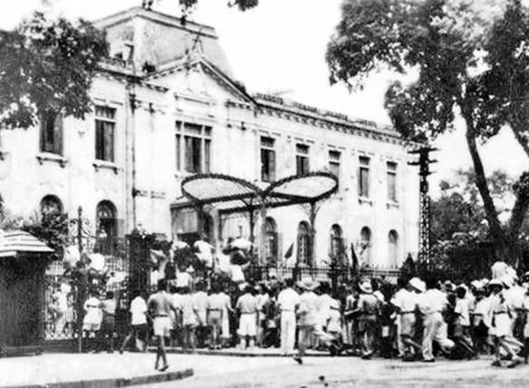
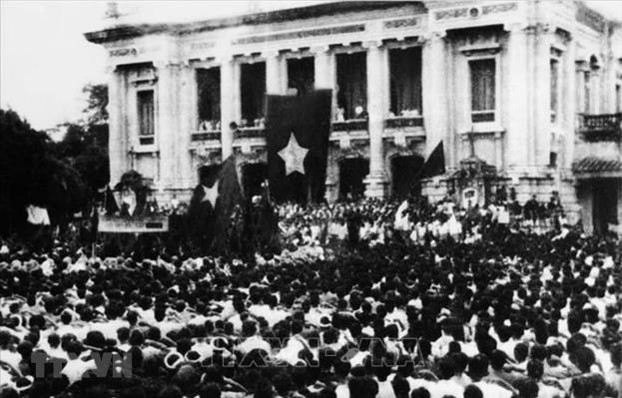
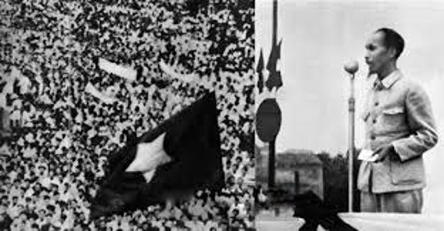
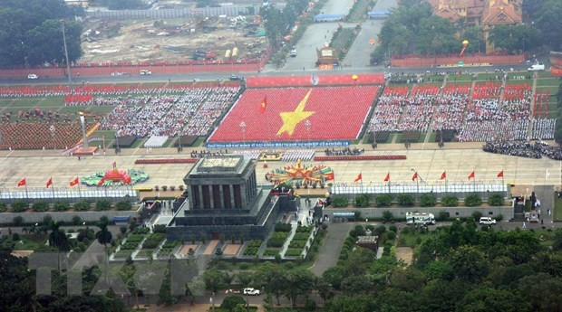

Dưới sự lãnh đạo của Đảng, nhân dân cả nước đồng loạt đứng lên tham gia, chỉ trong vòng 15 ngày cuối tháng 8/1945, cuộc Tổng khởi nghĩa đã giành thắng lợi hoàn toàn. Thành công của cuộc Cách mạng Tháng Tám năm 1945 là kết quả của 15 năm đấu tranh kiên cường, hy sinh, gian khổ của nhân dân ta dưới sự lãnh đạo của Đảng, trải qua 3 cuộc tổng diễn tập, đó là cao trào cách mạng 1930-1931; cuộc vận động dân chủ, dân sinh 1936-1939; cuộc vận động giải phóng dân tộc 1939-1945.
Cách mạng Tháng Tám thành công nhanh chóng và ngoạn mục do nhiều nguyên nhân, trước hết là nhờ có sự lãnh đạo đúng đắn và sáng suốt của Đảng Cộng sản Việt Nam, là kết quả của sự vận dụng sáng tạo Chủ nghĩa Mác-Lênin trong điều kiện cụ thể của nước ta. Đặc biệt là Đảng ta đã chớp thời cơ lịch sử để chỉ đạo và tổ chức khởi nghĩa giành thắng lợi trọn vẹn trong cả nước.
Cuộc Tổng khởi nghĩa là thành quả tuyệt vời của tinh thần, ý chí, trí tuệ con người Việt Nam được phát huy và nâng tầm cao mới sau 15 năm đấu tranh quật cường dưới sự lãnh đạo của một Đảng Mác-xít chân chính.

Quần chúng cách mạng và tự vệ chiến đấu Hà Nội chiếm Phủ Khâm sai (Bắc Bộ phủ), ngày 19/8/1945
Cách mạng Tháng Tám thành công, nước Việt Nam Dân chủ Cộng hòa ra đời, mở ra kỷ nguyên mới: Độc lập, tự do và chủ nghĩa xã hội. Đó là bước ngoặt mang tầm lịch sử lớn lao. Với thắng lợi của Cách mạng Tháng Tám, nhân dân ta đã đập tan xiềng xích áp bức của thực dân trong gần một thế kỷ, lật đổ chế độ quân chủ chuyên chế, nhân dân trở thành người chủ của một nước độc lập. Đảng ta từ một Đảng hoạt động bí mật, trở thành một Đảng cầm quyền. Từ đây là tiền đề cho đất nước, xã hội Việt Nam có những biến đổi lớn lao và sâu sắc.

Sáng 19/8/1945, người dân Hà Nội và các tỉnh lân cận kéo về quảng trường Nhà hát Lớn Hà Nội, dự lễ mít tinh hưởng ứng cuộc Tổng khởi nghĩa giành chính quyền
Thắng lợi của Cách mạng Tháng Tám là thắng lợi của Chủ nghĩa Mác-Lênin, tư tưởng Hồ Chí Minh và đường lối cách mạng của Đảng ta là độc lập dân tộc gắn liền với chủ nghĩa xã hội, kết hợp sức mạnh dân tộc với sức mạnh của thời đại. Đây còn là quá trình phát triển tất yếu của lịch sử dân tộc, là sức mạnh cố kết cộng đồng, tầm cao trí tuệ của dân tộc, hòa quyện với những tư tưởng, xu thế của thời đại vì hòa bình, dân chủ và tiến bộ xã hội.
Thắng lợi của Cách mạng Tháng Tám khẳng định: trong điều kiện trào lưu của cách mạng vô sản, cuộc cách mạng do một Đảng của giai cấp công nhân lãnh đạo không chỉ có thể thành công ở một nước tư bản phát triển, mà còn có thể thành công ở một nước thuộc địa nửa phong kiến lạc hậu và đi lên theo con đường của chủ nghĩa xã hội. Đây là sự phát triển, vận dụng đầy sáng tạo lý luận Mác-Lênin vào điều kiện cụ thể của nước ta.
Thành quả to lớn của Cách mạng Tháng Tám góp phần làm sụp đổ một mảng thành trì của chủ nghĩa thực dân cũ, mở ra kỷ nguyên cho dân tộc Việt Nam: độc lập, tự do và chủ nghĩa xã hội.
Ý nghĩa thời đại sâu sắc của Cách mạng Tháng Tám năm 1945 là: lần đầu tiên trong lịch sử hiện đại, cuộc Cách mạng thành công vang dội ở một nước thuộc địa nửa phong kiến, mở đầu cho công cuộc giải phóng của các dân tộc bị áp bức, bị nô dịch trên toàn thế giới. Việt Nam xứng đáng là đất nước tiên phong của sự nghiệp cách mạng giải phóng dân tộc, xóa bỏ thuộc địa của chủ nghĩa thực dân, đế quốc.
Chính vì vậy, khi đánh giá về ý nghĩa của Cách mạng Tháng Tám, Chủ tịch Hồ Chí Minh đã nói: “Chẳng những giai cấp lao động và nhân dân Việt Nam ta có thể tự hào, mà giai cấp lao động và những dân tộc bị áp bức nơi khác cũng có thể tự hào rằng: Lần này là lần đầu tiên trong lịch sử cách mạng, một Đảng mới 15 tuổi đã lãnh đạo cách mạng thành công, đã nắm chính quyền toàn quốc…”

Ngày 2/9/1945, Chủ tịch Hồ Chí Minh đọc Bản Tuyên ngôn độc lập, khai sinh ra nước Việt Nam Dân chủ Cộng hoà

77 năm đã qua, tinh thần của Cách mạng Tháng Tám, chân lý của Chủ tịch Hồ Chí Minh: “Không có gì quý hơn độc lập, tự do” vẫn luôn ngời sáng trong sự nghiệp đấu tranh giành độc lập và công cuộc xây dựng đất nước Việt Nam dân chủ, giàu mạnh dưới sự lãnh đạo của Đảng Cộng sản Việt Nam quang vinh.